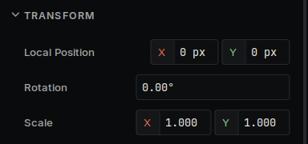

- 다음에 의해 생성됨 :
 1.18.0
1.18.0
|
Deki 0.40.0
임베디드 디스플레이와 데스크톱을 위한 모듈식 C++ 2D 엔진
|
단위를 기록하는 곳은 이 페이지 하나뿐입니다. 이 엔진에서 어떤 숫자에 단위가 있다면, 그 단위는 이 페이지에 있습니다.
저장되는 값은 SI 단위입니다. 언제나. 미터, 라디안, 초, 킬로그램, 섭씨 온도. 컴포넌트, 씬 파일, 패키지 API의 float은 이 페이지에 적힌 단위이며, 예외도 없고 프로젝트마다 다르지도 않습니다.
변환은 정확히 한 경계, 즉 표시에서만 일어납니다. 인스펙터는 거리를 픽셀로, 각도를 도로, 온도를 화씨로 보여 줄 수 있습니다. 씬 파일과 계산에 도달하는 것은 SI 단위입니다.
이것은 스타일 취향이 아닙니다. 이 규칙이 없으면 세 가지가 깨집니다.
| 물리량 | 저장 단위 | PhysicalUnit | 인스펙터 표시 |
|---|---|---|---|
| 거리 | 미터 | Distance | px (× pixelsPerMeter) 또는 m |
| 속도 | 미터 매 초 | Velocity | px/s 또는 m/s |
| 가속도 | 미터 매 초 제곱 | Acceleration | px/s² 또는 m/s² |
| 각도 | 라디안 | Angle | 항상 도 |
| 각속도 | 라디안 매 초 | AngularVelocity | 항상 도/s |
| 온도 | 섭씨 온도 | Temperature | °C 또는 °F |
| 시뮬레이션 시간 | float인 초 | - | - |
| 지속 시간, 타임아웃 | 정수인 밀리초 | - | - |
| 주파수 | 헤르츠 | - | - |
| 데이터 크기 | 바이트 | - | - |
| 질량 | 킬로그램 | - | 예약됨. 아직 사용하는 곳 없음 |
PhysicalUnit은 저장 방식에 대한 명시가 아니라 표시 힌트입니다. 생략하면 인스펙터에 단위 없는 숫자가 표시될 뿐이며, 값의 의미는 결코 바뀌지 않습니다.
둘 다 의도된 것이며, 어느 쪽인지는 타입이 알려 줍니다.
초 단위의 float은 시뮬레이션 델타, 즉 한 프레임에 월드 시간이 얼마나 진행되는지입니다. 초를 쓰면 숫자가 float 정밀도가 가장 좋은 1.0 근처에 머물며, 적분 단계에서 곱하는 값도 이것입니다.
밀리초 단위의 정수는 실제 시간입니다. 타임아웃, 애니메이션 프레임 지속 시간, 타임스탬프 같은 것입니다. 정확하고, 적분하지 않고 비교하며, 보통 밀리초를 쓰는 플랫폼 API를 거칩니다.
이름이 Ms로 끝나면 밀리초의 정수 개수입니다. 단위 표시가 없는 시간 float은 초입니다.
센서 데이터시트는 g와 초당 도를 씁니다. 그런 값을 반환하는 API가 잘못된 것은 아닙니다. 잘못된 것은 이름에 그렇다고 밝히지 않은 메서드에서 그런 값을 반환하는 API입니다. IDekiIMU가 그 패턴을 보여 줍니다.
두 이름 모두 단위를 담고 있으므로 어느 쪽도 잘못 읽힐 수 없습니다. 칩의 ±245 dps 수치와 대조하며 디버깅할 때는 데이터시트식 이름을 쓰고, 측정값을 적분하는 것은 모두 SI를 씁니다. 변환은 드라이버의 스케일 상수에 한 번만 있으며, 식 안에 데이터시트 수치가 그대로 보입니다.
ReadAccelMetersPerSecondSquared()와 ReadAccelG()에도 똑같이 적용됩니다.
센서 API를 추가한다면 메서드 이름에 단위를 넣으십시오. 단위 없는 벡터를 반환하는 ReadGyro()야말로 이 규칙이 막으려는 것입니다. 이 메서드는 엔진의 다른 모든 각도 값이 라디안인데도 dps로 문서화되어 있었고, 잘못된 가정으로 회전에 입력된 측정값은 57.3× 어긋납니다.
모두 deki-editor/src/core/Units.h에 있습니다. 파일 하나이므로 단위를 추가할 때는 한 곳만 편집하면 됩니다.

이를 제어하는 프로젝트 설정이며, 모두 표시 전용입니다.
| 설정 | 효과 |
|---|---|
| inspectorUnit | 거리 계열에 대한 Pixels 또는 Meters |
| pixelsPerMeter | px↔m 계수, 기본값 16 |
| temperatureUnit | Celsius 또는 Fahrenheit |
이 중 무엇을 바꿔도 디스크나 메모리에서는 아무것도 바뀌지 않습니다.